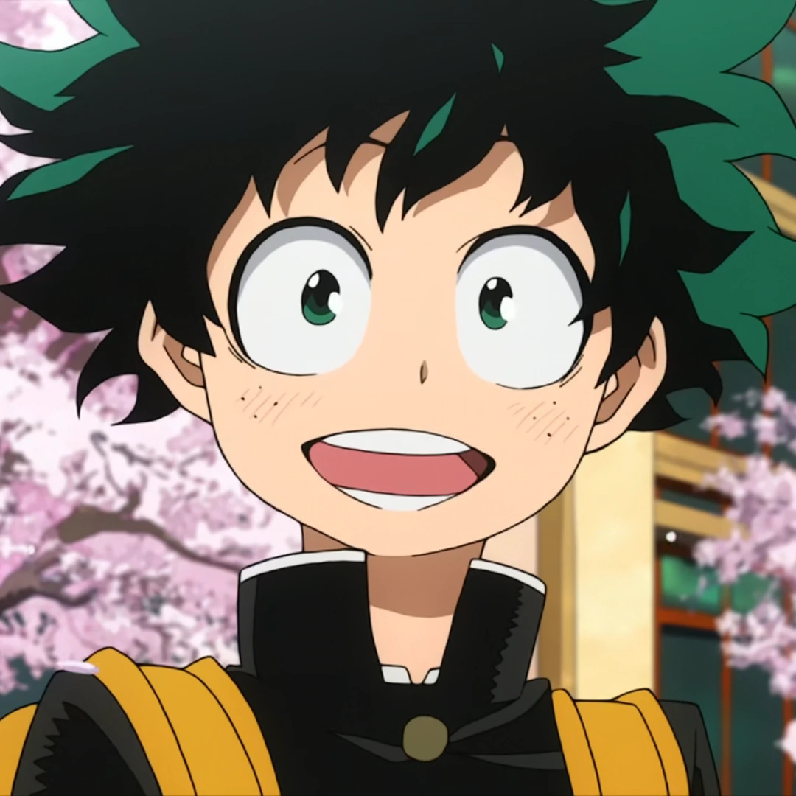
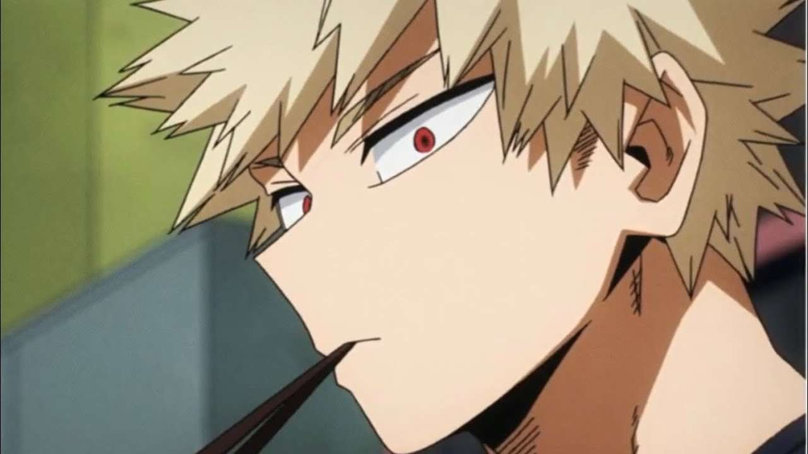
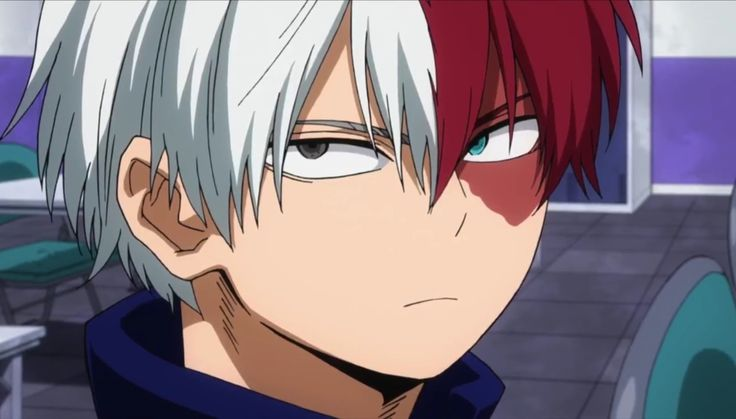
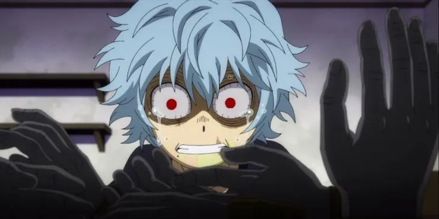

Personnages principaux
Les héros
Izuku Midoriya (Deku)
Izuku est un adolescent de 14 ans qui, contrairement à 80% de la population mondiale, ne possède aucun des super-pouvoirs nommés Alter. Lorsqu'il n'était encore qu'un enfant, il adorait regarder des vidéos d'All Might, le super-héros le plus fort au monde, qui devint vite son modèle. Izuku rêvait de devenir lui aussi un super-héros, cependant son Alter n'était pas encore apparu alors qu'il avait dépassé l'âge auquel les super-pouvoirs se manifestent. Doté d'une persévérance hors du commun, le jeune enfant continua tout de même à croire en son rêve et renseigna toutes les observations qu'il faisait dans divers cahiers en "préparation à son avenir de super-héros". Étant un garçon timide, Izuku se fait persécuter depuis sa plus tendre enfance, notamment par son voisin Katsuki Bakugô (Katchan). Un beau jour, alors qu'Izuku se faisait attaquer par un super-vilain, All Might viendra à sa rescousse. Le jeune garçon fera alors part à son idole du fait qu'il aimerait être un super-héros lui aussi, et lui demande si c'est possible de le devenir sans posséder d'Alter. Le super-héros lui répondra alors que c'est impossible.
Katsuki Bakugo (Katchan)
Katsuki a obtenu son pouvoir à l'âge de 4 ans (âge normal où apparaissent les Alters). Au début ses explosions ressemblaient à des feux d'artifices, mais très vite, elles sont devenues bien plus violentes. Avec l'apparition de son pouvoir très puissant, Katsuki s’enorgueilli, et développa rapidement une fierté sans borne, le poussant à se sentir au dessus des autres, spécialement au dessus d'Izuku (Katsuki est confiant et possède un pouvoir puissant / Izuku est timide et sans pouvoir, chose extrêmement rare étant donné ses antécédents familiaux). Mais bien que son attitude était devenue plus brutale, Katsuki resta un garçon avec un bon fond, sans peur, sûr de lui, avec un caractère de leader (qualités lui valant l'admiration d'Izuku). Lui aussi est un fan d'All Might, il le respecte et a pour objectif de le surpasser.
Shoto Todoroki
 Le père de Shoto (Enji Todoroki), a toujours été éclipsé par son grand rival All Might et n’a été considéré que comme le deuxième meilleur, indépendamment de son impressionnant dossier de résolution des crimes.
Enji a développé une obsession de dépasser All Might, au point de forcer un mariage d'alter sur la mère de Shoto, Rei Todoroki, afin de concevoir un enfant avec un Alter assez fort (le feu et la glace) pour être capable de dépasser All Might.
Quand il avait cinq ans, Shoto a commencé à recevoir la formation de son père en raison de son alter.
Cependant, la formation était trop dure et a forcé Shoto à pleurer et à vomir. Rei essayait de le défendre, mais Enji refusait de l’écouter et la maltraitait même physiquement devant Shoto.
Son père a également empêché Shoto d’interagir avec ses frères et sœurs plus âgés pendant qu’ils jouaient et Shoto a commencé à mépriser sa formation et à ressentir une haine envers son père pour abuser de lui et sa mère.
Les vilains
All For One

All For One est le fondateur de l'Alliance des super-vilains le principal antagoniste de l’Arc Raid contre l'Alliance des super-vilains et l’antagoniste central de la série, avec Tenko Shimura.
Autrefois le vilain le plus puissant du Japon et l’ennemi juré de All Might, ses véritables motifs ne sont pas clairs et on ne connait que son nom de famille, Shigaraki.
Son objectif actuel est d’élever Tenko pour devenir son successeur éventuel.
Il était sous la garde de la police et enfermé à Tartarus, jusqu'à ce qu'il s'échappe en libérant les autres prisonniers au passage.
All For One est un psychopathe, un égoïste, un misanthrope et un manipulateur. Il n'hésite pas à exploiter les gens pour son propre gain.
Il est suggéré qu'il est aussi très charismatique puisqu'il a pu rapidement ramener plusieurs bandits à sa cause et renverser les règles du Japon.
Ses motivations restent un mystère pour tous, même si quand All Might l'avait interrogé, All For One avait répondu qu'il a simplement voulu réaliser ses idéaux et qu'il avait la puissance de le faire.
Tomura Shigaraki
 Tenko Shimura, plus connu sous le pseudonyme de Tomura Shigaraki est l'antagoniste principal de la série de mangas/anime My Hero Academia ainsi que le disciple d'All For One.
Il était chef de l'Alliance des super-vilains avant de devenir le commandant suprême du Front de Libération du Paranormal.
Shigaraki a toujours été dégoûté par la société et il n'a aucun remord à tuer afin de provoquer All Might, le "symbole de la paix".
Il est arrogant, égoïste, dépendant et exigeant. Quand les choses ne vont pas dans son sens, il peut devenir furieux.
La seule personne qu'il respecte vraiment est son mentor, All For One. Il semble aussi assez proche de ses alliés.
Désintégration lui permet de détruire tout ce qui entre en contact avec ses mains.
Autrefois, son alter ne détruisait que ce qu'il touchait mais depuis son combat contre [Re-Destro],
Désintégration lui permet de détruire une ville entière s'il le souhaite.